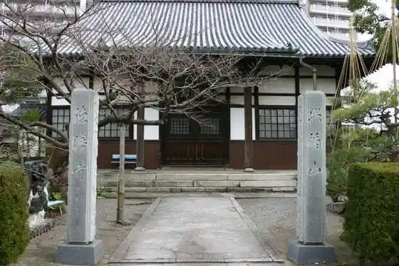
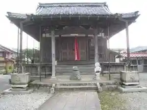
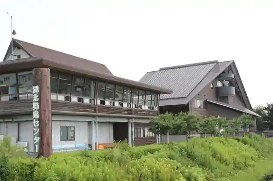

Tokumasari Tera
Nagahama, Shiga · 0749-62-5774 · Official / source link

Kunitomo Teppo Museum
Nagahama, Shiga · 0749-62-1250 · Official / source link
Take Hasu Tera
Nagahama, Shiga · 0749-85-2273 · Official / source link

Kohoku Yacho Center
Nagahama, Shiga · 0749-79-1289 · Official / source link

Kuroyama no Sekibutsu Sekito Gun
Nagahama, Shiga · 0749-53-2650 · Official / source link
Yutaka Park Cherry Blossoms
Nagahama, Shiga · Official / source link
Shinshu Otani Ha Go Village Betsuin
Nagahama, Shiga · 0749-73-3133 · Official / source link
Hama Kogetsu
Nagahama, Shiga · 0749-62-1111 · Official / source link
Kokuho Jubun Juichi Men Kannon Meguri (Ika Kotsu)
Nagahama, Shiga · Official / source link
Inokuchi no Dosho
Nagahama, Shiga · Official / source link
JR Ki no Hon Eki
Nagahama, Shiga · Official / source link
Suga Shrine
Nagahama, Shiga · 0749-53-2650 · Official / source link
Hayasaki Biotopu
Nagahama, Shiga · 077-528-3463 · Official / source link
Shimosaka Shi Yakatato
Nagahama, Shiga · 0749-62-0198 · Official / source link
Zencho Tera
Nagahama, Shiga · 0749-86-2001 · Official / source link
Sengagaku Kosenjo
Nagahama, Shiga · Official / source link
Maruyama Burial Mound
Nagahama, Shiga · Official / source link
Kinomoto Town Suteikkuhoru
Nagahama, Shiga · 0749-82-2411 · Official / source link
Oyama Shaka Do (Hakusan Shrine)
Nagahama, Shiga · 0749-85-2273 · Official / source link
Keiun Kan
Nagahama, Shiga · Official / source link
Kohoku Yacho Center Biwako Mizutori Shitchi Center
Nagahama, Shiga · 0749-79-8022 · Official / source link
Kotani Tera
Nagahama, Shiga · 0749-78-0257 · Official / source link
Sekido Tera
Nagahama, Shiga · 0749-85-2273 · Official / source link
Kozan Campground
Nagahama, Shiga · 0749-76-0076 · Official / source link
Suga Tani Onsen
Nagahama, Shiga · 0749-74-2235 · Official / source link
Kurokabe Sukuea
Nagahama, Shiga · Official / source link
Oku Biwa Supotsu Forest
Nagahama, Shiga · 0749-72-2548 · Official / source link
Daikichi Tera
Nagahama, Shiga · 0749-76-1051 · Official / source link
Higashino Sansai Ato
Nagahama, Shiga · 0749-53-2650 · Official / source link
Ima So Kanko Budo Sono
Nagahama, Shiga · 0749-74-1322 · Official / source link
Yokoyama Gaku
Nagahama, Shiga · 0749-84-0386 · Official / source link
Hiroyoshi Kan
Nagahama, Shiga · Official / source link
Kogan Doro Yutaka Park
Nagahama, Shiga · Official / source link
Kohoku Kannon Samameguri Takatsuki Kannon Sama Kosu (Ika Kotsu)
Nagahama, Shiga · Official / source link
Omi Ko Toma Iori
Nagahama, Shiga · 0749-74-2116 · Official / source link
Gemba O Castle Ruins
Nagahama, Shiga · 0749-53-2650 · Official / source link
Kurokabe Go Gokan Kurokabe AMISU
Nagahama, Shiga · 0749-65-2330 · Official / source link
Enman Tera (Takatsuki Town)
Nagahama, Shiga · 0749-85-2273 · Official / source link
Kohoku no Kannon Samameguri Kinomoto Kannon Sama Kosu (Ika Kotsu)
Nagahama, Shiga · Official / source link
Yamamotoyama Castle Ruins
Nagahama, Shiga · 0749-53-2650 · Official / source link
Nagahama Takeo Shima Koro (Biwakokisen)
Nagahama, Shiga · 0749-62-3390 · Official / source link
Yanagigase Sekimori no Mon
Nagahama, Shiga · 0749-53-2650 · Official / source link
Nishino Yakushido
Nagahama, Shiga · 090-8938-6369 · Official / source link
Ki no Moto Koyu Kan
Nagahama, Shiga · 0749-82-6311 · Official / source link
Deai Forest Inoe Yasushi Kinen Shitsu
Nagahama, Shiga · 0749-85-4600 · Official / source link
Asai Folk History Museum (O City Village)
Nagahama, Shiga · 0749-74-0101 · Official / source link
Odori Tera (Nagahama Gobo)
Nagahama, Shiga · 0749-62-0054 · Official / source link
Takeo Shima
Nagahama, Shiga · Official / source link
Kobori Enshu Shusseichi
Nagahama, Shiga · 0749-64-0395 · Official / source link
Onore Kozan
Nagahama, Shiga · 0749-53-2650 · Official / source link
Ruten no Hotoketachi (Ika Kotsu)
Nagahama, Shiga · Official / source link
Kuroda Ie O Byosho
Nagahama, Shiga · 0749-53-2650 · Official / source link
Kohoku no Kannon Samameguri Yogo Kannon Sama Kosu (Ika Kotsu)
Nagahama, Shiga · Official / source link
Jinsho Tera
Nagahama, Shiga · Official / source link
Takatsuki Kannon Do (Daien Tera)
Nagahama, Shiga · 0749-85-2273 · Official / source link
Onore Taka Iori
Nagahama, Shiga · 0749-82-6020 · Official / source link
TOYOTA SHARE Nagahama Eki Nishiguchi Mae
Nagahama, Shiga · 0800-666-2077 · Official / source link
Kohoku Shinko no Tera Meguri (Ika Kotsu)
Nagahama, Shiga · Official / source link
Nagahama Gobo Omotesando
Nagahama, Shiga · 0749-65-6521 · Official / source link
Hachiman Shrine (Takatsuki Town)
Nagahama, Shiga · Official / source link
Kohoku Bunka Horu
Nagahama, Shiga · 0749-78-1287 · Official / source link
Oku Biwako Park Uei
Nagahama, Shiga · 0749-53-2650 · Official / source link
Toyotarentariisu Shiga Nagahama Mise
Nagahama, Shiga · 0749-62-5500 · Official / source link
Kin Fun Gaku
Nagahama, Shiga · 0749-82-5961 · Official / source link
Hikiyama Museum
Nagahama, Shiga · 0749-65-3300 · Official / source link
Takatsuki Kannon no Sato Folk History Museum
Nagahama, Shiga · 0749-85-2273 · Official / source link
Myoho Tera
Nagahama, Shiga · 0749-62-2434 · Official / source link
Higashi Ajia Koryu Hausu Amamori Hoshu Iori
Nagahama, Shiga · 0749-85-5095 · Official / source link
Toyokuni Shrine (Nagahama)
Nagahama, Shiga · 0749-50-4796 · Official / source link
Takano Daishido
Nagahama, Shiga · 0749-85-2273 · Official / source link
Hidekichi Mitsunari Deai no Zo
Nagahama, Shiga · Official / source link
Sugaura Shuraku
Nagahama, Shiga · Official / source link
Omi Ikoi no Plaza
Nagahama, Shiga · 0749-82-2500 · Official / source link
Yutaka Park
Nagahama, Shiga · 0749-62-4111 · Official / source link
Shin Saka Jizo (Hori Shi Jizo)
Nagahama, Shiga · 0749-53-2650 · Official / source link
Nagahama Hachiman Shrine
Nagahama, Shiga · 0749-62-0481 · Official / source link
Nagahama Tetsudo Sukuea
Nagahama, Shiga · 0749-53-2650 · Official / source link
Yogo Mizumi Ajisai Sono
Nagahama, Shiga · 0749-53-2650 · Official / source link
Daigo Tera
Nagahama, Shiga · 0749-74-1776 · Official / source link
Onore Kokaku Sedai Kaku
Nagahama, Shiga · 0749-82-2784 · Official / source link
Uddeiparu Yogo
Nagahama, Shiga · 0749-86-4145 · Official / source link
JR Yogo Eki
Nagahama, Shiga · Official / source link
Sei Myo Tera
Nagahama, Shiga · 0749-85-2273 · Official / source link
Kitaguni Kaido Kinomoto Yado
Nagahama, Shiga · 0749-53-2650 · Official / source link
Kyu Kai Chi Gakko
Nagahama, Shiga · Official / source link
Roadside Station Kohoku Mizudori Suteshon
Nagahama, Shiga · 0749-79-8060 · Official / source link
Akago Yama Ski Area Su no Paru
Nagahama, Shiga · 0749-86-4145 · Official / source link
Kohoku Mizutori Park
Nagahama, Shiga · 0749-79-1289 · Official / source link
Go Senken no Kan
Nagahama, Shiga · 0749-74-0560 · Official / source link
Anraku Tera (Nagahama)
Nagahama, Shiga · 0749-72-2381 · Official / source link
Ikehara Soba Dojo
Nagahama, Shiga · Official / source link
Suzu no Ya Seisen Kaku
Nagahama, Shiga · 0749-82-2233 · Official / source link
Kita Biwako Hotel Guratsuie
Nagahama, Shiga · 0749-62-7777 · Official / source link
Nishino Suido
Nagahama, Shiga · 0749-53-2650 · Official / source link
Kinomoto Jizo In
Nagahama, Shiga · 0749-82-2106 · Official / source link
Chi Zen In
Nagahama, Shiga · 0749-62-5358 · Official / source link
Kitaguni Kaido Ando Ie
Nagahama, Shiga · 0749-65-3935 · Official / source link
Minamihama Kanko Budo Sono
Nagahama, Shiga · 0749-72-4137 · Official / source link
Nagahama Bunka Geijutsu Hall
Nagahama, Shiga · 0749-63-7400 · Official / source link
Sengoku Gaidosuteshon
Nagahama, Shiga · Official / source link
Kurokabe 24 Gokan Togei Kobo Hokkokugama
Nagahama, Shiga · 0749-68-2680 · Official / source link
Kurokabe Nigokan Ekuran
Nagahama, Shiga · Official / source link
Yokoyama Castle Ruins
Nagahama, Shiga · 0749-64-0395 · Official / source link
JR Takatsuki Eki
Nagahama, Shiga · Official / source link
Ishida Mitsunari Shusseichi
Nagahama, Shiga · 0749-62-8285 · Official / source link
O Hanami Fune Sakura Uraura
Nagahama, Shiga · 077-572-2114 · Official / source link
Aka Fun Tera
Nagahama, Shiga · 0749-85-2273 · Official / source link
Yogo Mizumi
Nagahama, Shiga · 0749-53-2650 · Official / source link
Cha Wan Festival no Kan
Nagahama, Shiga · 0749-86-8022 · Official / source link
Tsukubusuma Shrine (Takeo Shima Shrine)
Nagahama, Shiga · Official / source link
Gyokusen Tera (Torahime Town)
Nagahama, Shiga · Official / source link
Yogo Kogen Resort Yappu
Nagahama, Shiga · Official / source link
Shirasu Masako (Kakure Sato) no Butai Wo Tazune Te 2
Nagahama, Shiga · Official / source link
Yotsuashi Mon
Nagahama, Shiga · Official / source link
Ito Tori Shiryo Hozon Kan
Nagahama, Shiga · 0749-82-4127 · Official / source link
Shichi Shichi Atamagagaku
Nagahama, Shiga · 0749-86-4145 · Official / source link
Anegawa Kosenjo
Nagahama, Shiga · Official / source link
Takatsuki Sogo Information Center
Nagahama, Shiga · 0749-85-6565 · Official / source link
Shin Saka Kodo
Nagahama, Shiga · 0749-53-2650 · Official / source link
Nagahama Odekake Pasupoto
Nagahama, Shiga · Official / source link
Hokke Tera
Nagahama, Shiga · 0749-53-2650 · Official / source link
Kita Omi Resort
Nagahama, Shiga · Official / source link
Chausuyama Burial Mound (Nagahama)
Nagahama, Shiga · 0749-64-0395 · Official / source link
Nagahama Minato (Kankosen no Riba)
Nagahama, Shiga · 0749-65-6644 · Official / source link
Keisoku Tera (Kyu Meshi Fuku Tera)
Nagahama, Shiga · 0749-53-2650 · Official / source link
Kohoku no Kannon Samameguri B Kosu Nishiazai Yogo Kosu (Ika Kotsu)
Nagahama, Shiga · Official / source link
Takatoki Kawa Kasenjiki
Nagahama, Shiga · Official / source link
Kotani Shiro Sengoku History Museum
Nagahama, Shiga · 0749-78-2320 · Official / source link
Nakagawa Kiyohide no Haka
Nagahama, Shiga · 0749-53-2650 · Official / source link
TOYOTA SHARE Nagahama Bunka Geijutsu Hall
Nagahama, Shiga · 0800-666-2077 · Official / source link
Sugayama Tera
Nagahama, Shiga · 0749-53-2650 · Official / source link
Nagahama Ika Tsuin'ariina
Nagahama, Shiga · Official / source link
Kojo Takushii
Nagahama, Shiga · 090-6901-0049 · Official / source link
Kotani Castle Ruins
Nagahama, Shiga · Official / source link
Sha Na In
Nagahama, Shiga · 0749-85-2273 · Official / source link
Kitaguni Kaido (Nagahama Yado)
Nagahama, Shiga · 0749-65-6521 · Official / source link
Uryu Yakushido (Haku Kiyoshi Tera)
Nagahama, Shiga · 0749-74-2740 · Official / source link
Kurokabe Juhachi Gokan 96CAFE
Nagahama, Shiga · 0749-65-2330 · Official / source link
Densetsu no Mizumi Yogo Mizumi to Yogo no Zensatsu
Nagahama, Shiga · Official / source link
Dogan Jikan Oto Do (Ko Gen Tera)
Nagahama, Shiga · 0749-85-2632 · Official / source link
Roadside Station Asai Sanshimai no Sato
Nagahama, Shiga · Official / source link
Tora Gozenyama
Nagahama, Shiga · Official / source link
Kuzu Kago Ozaki Kotei Iseki Museum
Nagahama, Shiga · 0749-53-2650 · Official / source link
Shirasu Masako (Kakure Sato) no Butai Wo Tazune Te 1 (Ika Kotsu)
Nagahama, Shiga · Official / source link
JR Nagahama Eki
Nagahama, Shiga · Official / source link
Ota Tera
Nagahama, Shiga · 0749-85-2273 · Official / source link
Narita Art Museum
Nagahama, Shiga · 0749-65-0234 · Official / source link
Inoe Yasushi (Hoshi to Matsuri) no Butai Wo Tazune Te
Nagahama, Shiga · Official / source link
Sengagaku
Nagahama, Shiga · 0749-53-2650 · Official / source link
to Ki Yama Aka Nochi Tera
Nagahama, Shiga · 090-3164-7486 · Official / source link
Yamato Suigen Forest
Nagahama, Shiga · 0749-53-2650 · Official / source link
Hogon Tera (Takeo Shima Kannon)
Nagahama, Shiga · Official / source link
Tsuwamono Tomo no Yume no Ato Kohoku (Sengoku no Michi)
Nagahama, Shiga · Official / source link
Nyukawa no Tsuriba
Nagahama, Shiga · 0749-86-2607 · Official / source link
Tada Sachi Tera
Nagahama, Shiga · 0749-62-1577 · Official / source link
Kaiyo Do Figyua Museum Kurokabe
Nagahama, Shiga · 0749-68-1680 · Official / source link
Nagahama Roman Biiru
Nagahama, Shiga · Official / source link
Osawa Tera
Nagahama, Shiga · 0749-85-2273 · Official / source link
Nyukawa Gorge
Nagahama, Shiga · 0749-86-2607 · Official / source link
Ekimachi Terasu Nagahama
Nagahama, Shiga · Official / source link
Jinsho Tera
Nagahama, Shiga · 0749-62-1629 · Official / source link
Sengagaku Rifuto
Nagahama, Shiga · 0749-82-3009 · Official / source link
Kuroda Kan'onji
Nagahama, Shiga · 0749-85-2273 · Official / source link
Yanma Museum
Nagahama, Shiga · Official / source link
Nagahama Shiro (Nagahama Shiro History Museum)
Nagahama, Shiga · 0749-63-4611 · Official / source link
Torahime Toki Yu Kan
Nagahama, Shiga · 0749-73-5030 · Official / source link
Hiyamizu Tera Tainai Hotoke Museum
Nagahama, Shiga · 0749-85-2273 · Official / source link
Kurokabe Jusan Gokan Garasu Taiken Atorie Rudiiku
Nagahama, Shiga · 0749-65-1221 · Official / source link
Yogo Dosui Michi
Nagahama, Shiga · 0749-53-2650 · Official / source link
Yogo Kodomo Museum
Nagahama, Shiga · 0749-86-4145 · Official / source link
Mozu Kyodai no Haka
Nagahama, Shiga · 0749-53-2650 · Official / source link
Hotel & Rizotsu Nagahama
Nagahama, Shiga · 0749-64-2000 · Official / source link
Nagahama Yakusho
Nagahama, Shiga · 0749-62-4111 · Official / source link